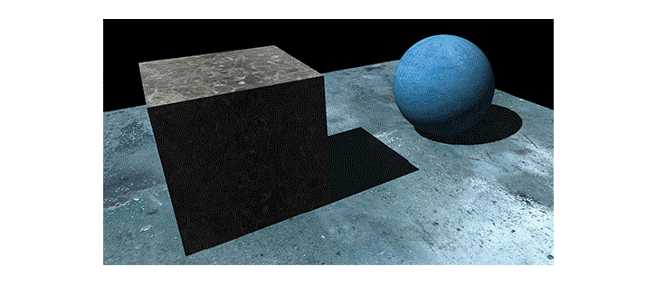

|
Факт - тени не являются 100% черным, суть в том, что в реальном времени фотоны могут отражаться от различных поверхностей и в итоге попадать туда, куда напрямую фотоны от источника не долетают. И в real-time графике для испровления данной ситуации был придаман "Ambient Occlusion" По сути это алгоритм иммитируещий затенение от непрямого света |
 |